Novedades de la 1.1: panel de vista previa, modo de lectura, administrador de contraseñas, conversión de archivos comprimidos y cinco idiomas más. Ver los cambios
Qué hace
Todo lo que debe hacer un compresor
Abre zip, 7z, rar, tar, iso y decenas más. Crea zip, 7z y tar con contraseñas AES-256. Explora, busca, arrastra archivos al Explorador y convierte un archivo comprimido a otro formato; el original se queda hasta que lo elimines.
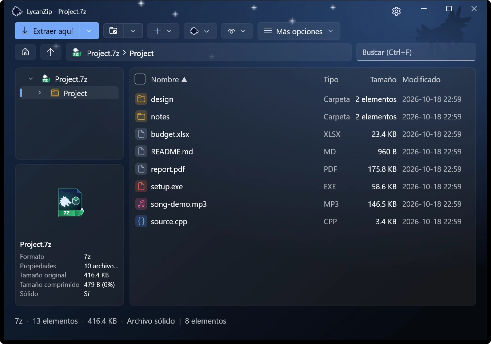
Un árbol de carpetas y una lista de detalles.
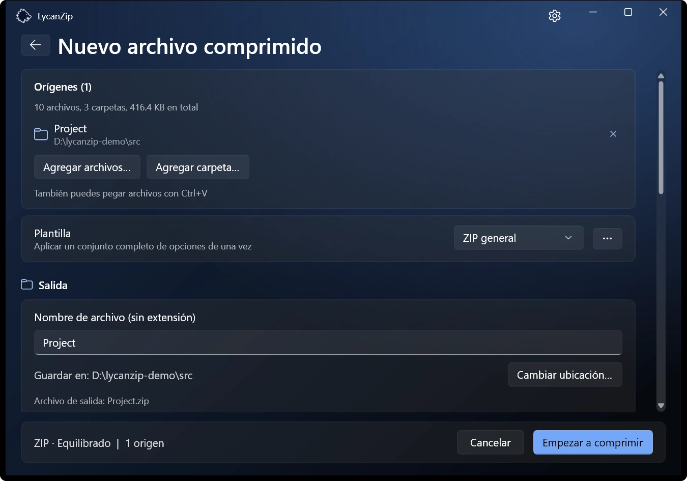
Crear un archivo comprimido: un formato y un modo.
Los nombres de archivo se ven bien
Los zip antiguos con nombres en Big5, GBK, Shift-JIS o EUC-KR se detectan automáticamente. Si actualizas uno de ellos, los nombres se guardan en UTF-8 y se leen bien en cualquier PC; los datos se copian tal cual.
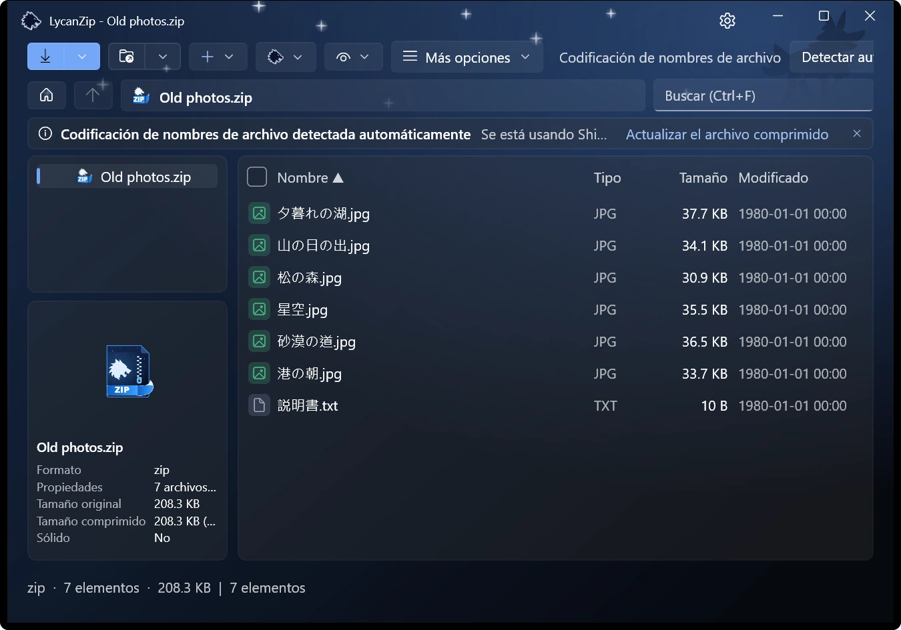
Detectado automáticamente: Shift-JIS.
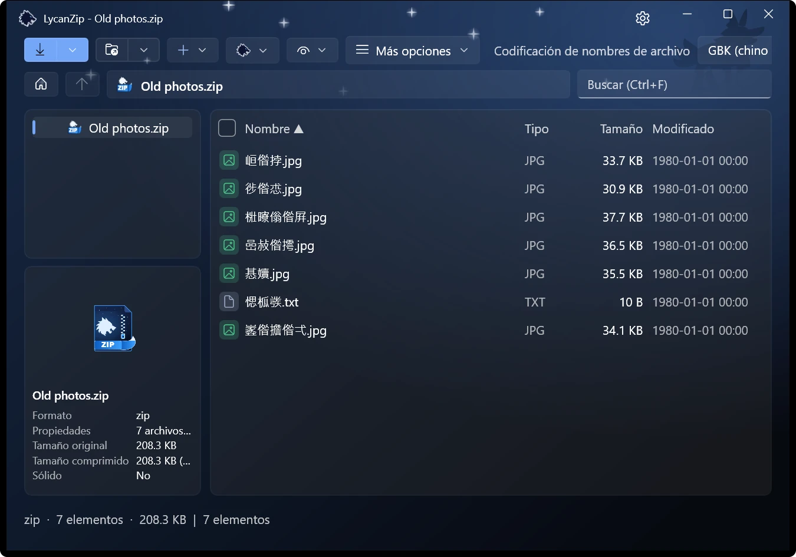
El mismo archivo leído con la codificación equivocada.
Mira dentro sin descomprimir
Selecciona un archivo y el panel de vista previa lo muestra: imágenes, texto, PDF y audio. Las imágenes también se abren en un visor con tira de miniaturas, zoom y animaciones. La música suena en un reproductor integrado que muestra las etiquetas.
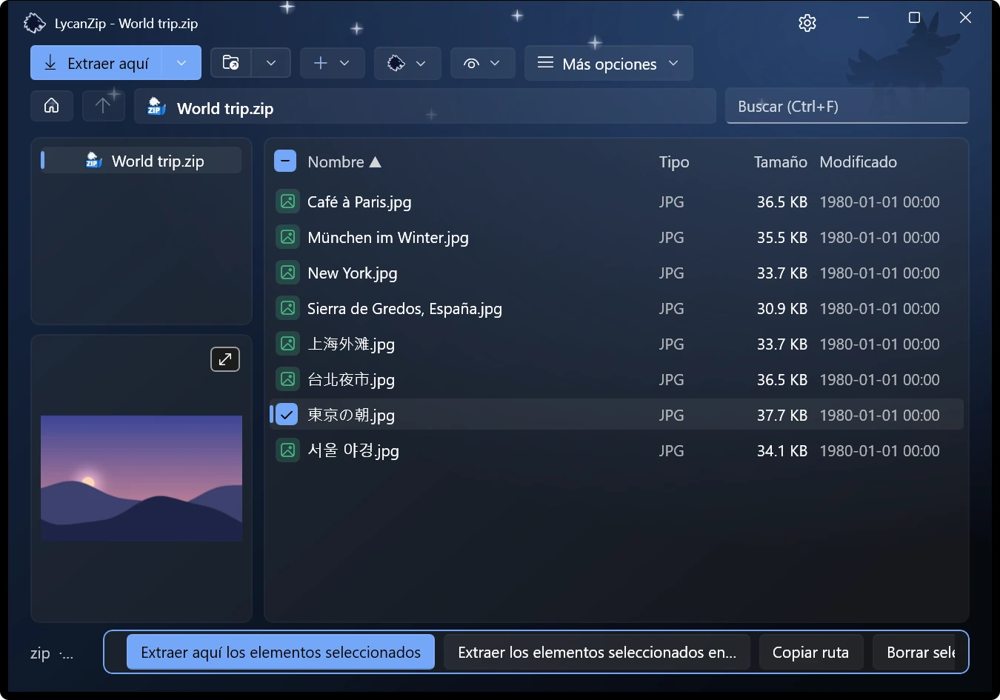
El panel de vista previa sigue a la selección.
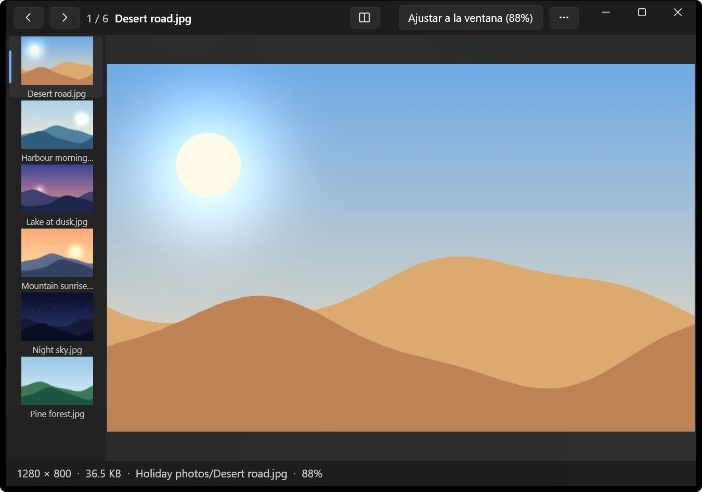
La vista previa de imágenes.
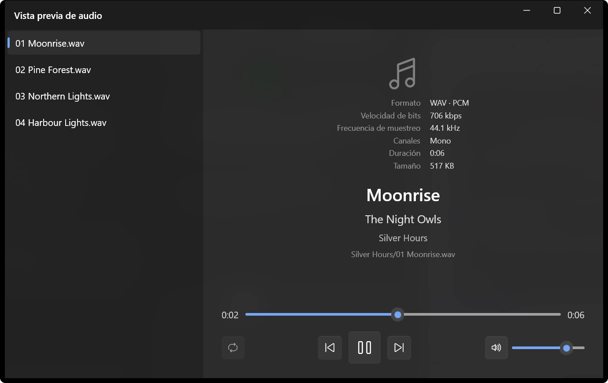
La vista previa de audio.
Un modo de lectura para cómics
Un libro entero en orden, a través de carpetas, con dos páginas a la vez y de derecha a izquierda si quieres. Se recuerda la página de cada libro. .cbz, .cbr, .cb7 y .cbt se abren directamente en él.
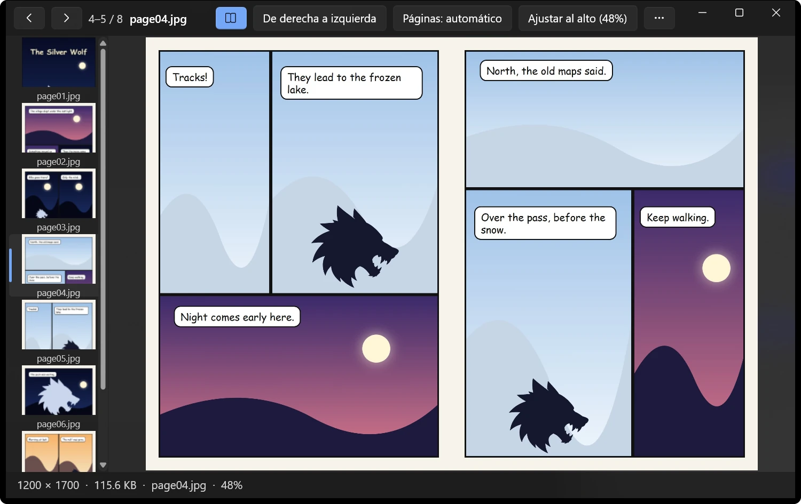
Dos páginas a la vez en el modo de lectura.
Un administrador de contraseñas que se queda en tu PC
Las contraseñas que han funcionado en esta sesión y las guardadas se prueban antes de preguntarte. Las guardadas se cifran para tu cuenta de Windows, con una contraseña maestra opcional. No se envía nada a ningún sitio.
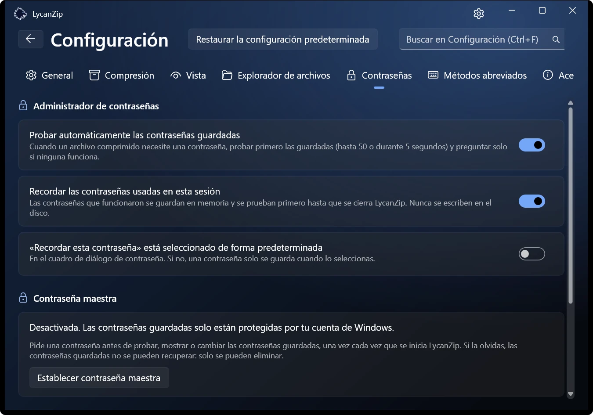
La pestaña Contraseñas de la configuración.
El menú contextual de Windows 11 Solo versión de Store
Opciones en el primer nivel del menú de Windows 11, sin pasar antes por «Mostrar más opciones». Windows solo lo permite a un paquete firmado, así que viene con la versión de Microsoft Store. Las demás versiones usan el menú clásico.
Oscuro, claro, tu color
Claro u oscuro, seis colores de énfasis o simplemente como Windows. Efectos de sonido opcionales (dos conjuntos) y animaciones que puedes desactivar.
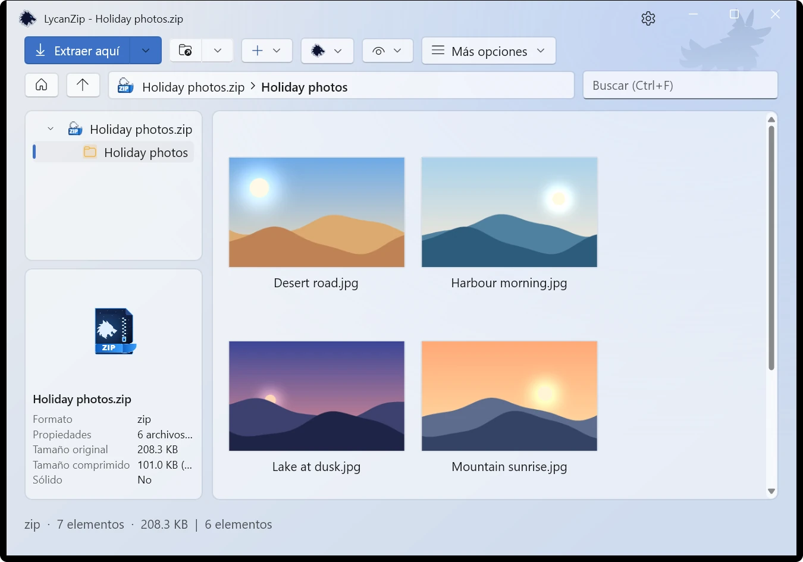
Claro · Luz de luna
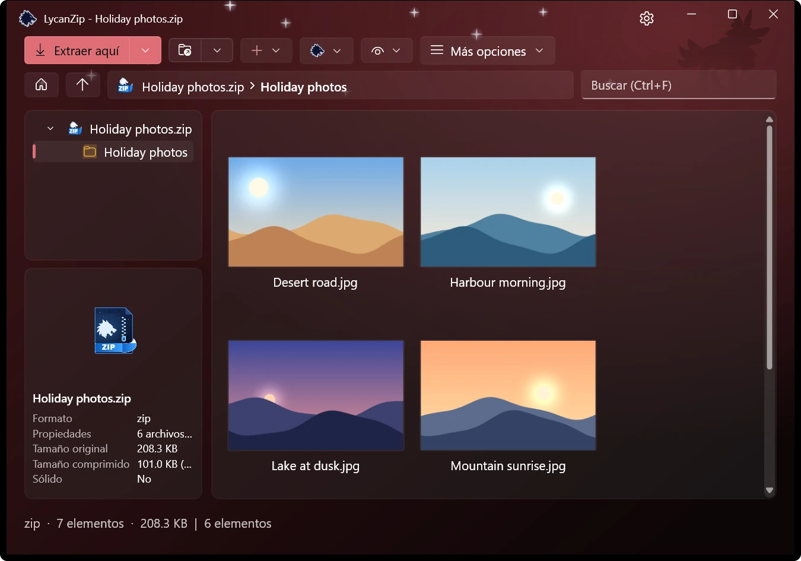
Oscuro · Luna de sangre
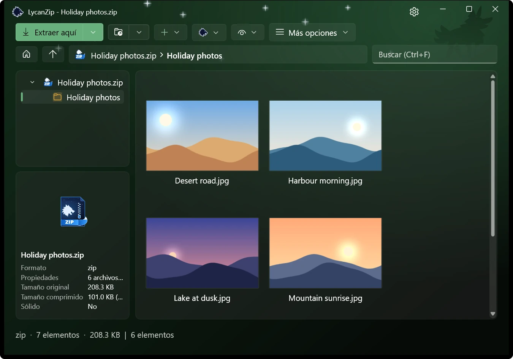
Oscuro · Bosque
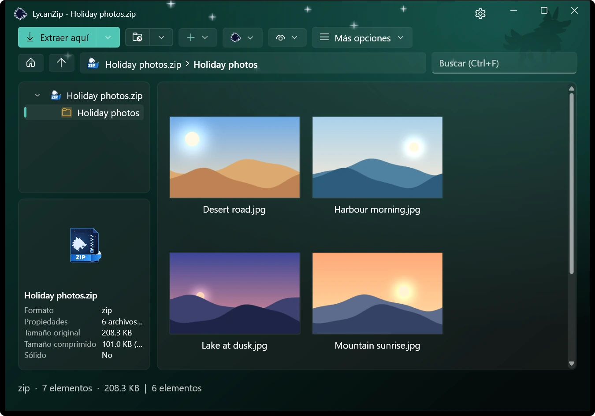
Oscuro · Aurora
Cambia un archivo comprimido sin extraerlo
Agrega, elimina, cambia el nombre y reemplaza dentro de zip, 7z y tar, o edita un archivo en tu propio editor y guárdalo de vuelta. Se hace sobre una copia segura.
Seguro por diseño
Sin telemetría, sin anuncios, sin recopilar nada. Y tres formas de comprobar lo que vas a abrir:
Análisis antivirus
Analiza un archivo comprimido con tu propio antivirus mediante Windows AMSI, sin extraerlo al disco.
Comprobación SHA-256
Calcula el hash de cualquier archivo, carpeta o archivo comprimido. Verifica un archivo .sha256 con un doble clic.
Búsqueda en VirusTotal
Un clic abre la página de VirusTotal del hash del archivo. Solo se envía el hash, nunca el archivo.
Se rechazan las rutas inseguras, no se siguen los vínculos y se detectan las bombas de compresión.
En tu idioma
Inglés, chino tradicional, chino simplificado, japonés, coreano, alemán, español y francés.
Pequeño, honesto y abierto
Gratuito y de código abierto
Licencia MIT, código en GitHub. Sin anuncios ni cuentas.